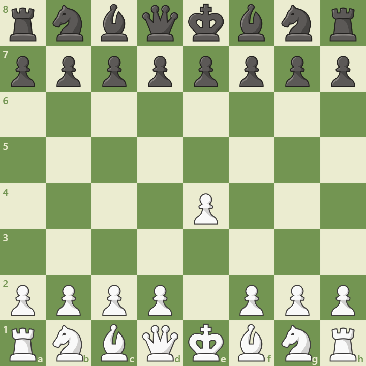
1. e4Białe
Otwarcie pionem królewskim.
Nagranie wideo z partii oraz zestawienie 12 pierwszych ruchów otwarcia.
Białymi gra twórca i główny popularyzator tego wariantu, bułgarski szachista Volen Dyulgerov, znany w sieci pod pseudonimem Witty Alien. Po wczesnym poświęceniu skoczka na f7 białe forsują kolejne poświęcenie wieży na e6, a partię kończy efektowna ofiara hetmana na h7 i mat skoczkiem w 18. ruchu.
Kliknij dowolną szachownicę, aby zobaczyć powiększenie.

Otwarcie pionem królewskim.
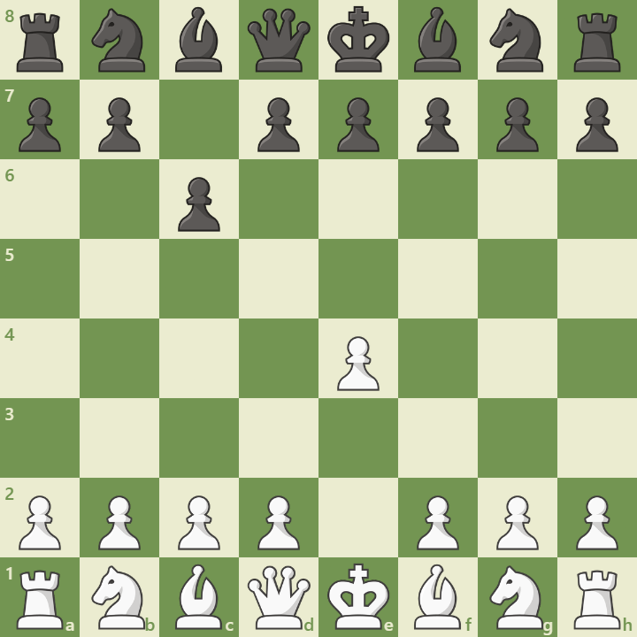
Obrona Caro-Kann.
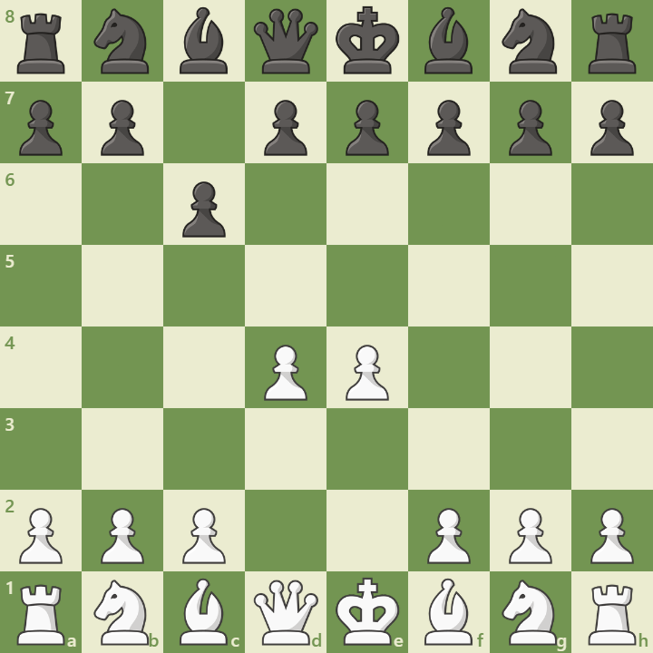
Budowa centrum pionowego.
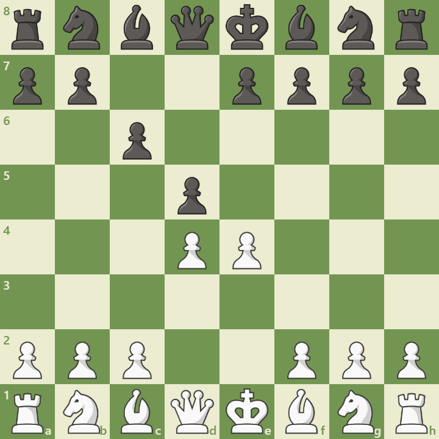
Uderzenie w piona e4.
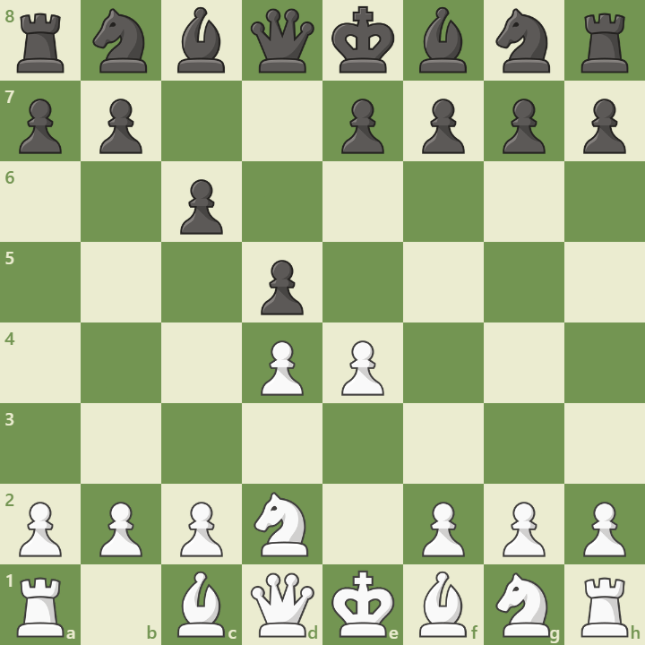
Rozwój skoczka i obrona e4.
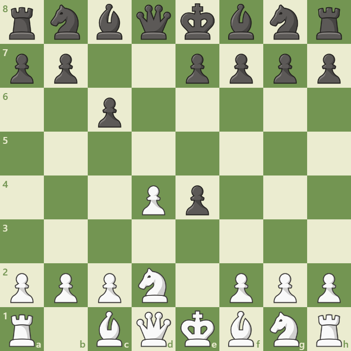
Otwarcie centrum wymianą na e4.
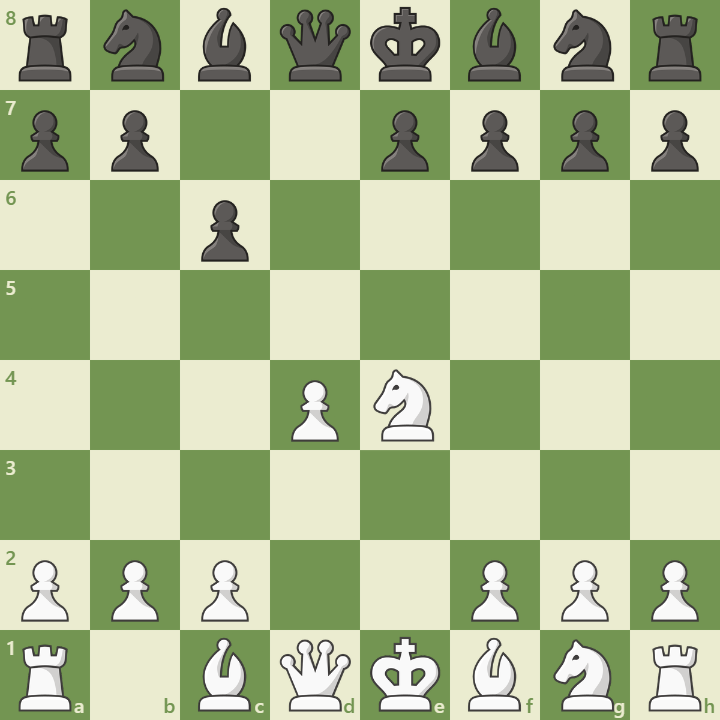
Odbicie figurą w centrum.
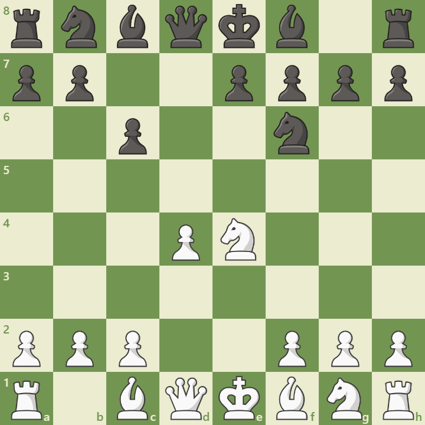
Wyprowadzenie skoczka króla.
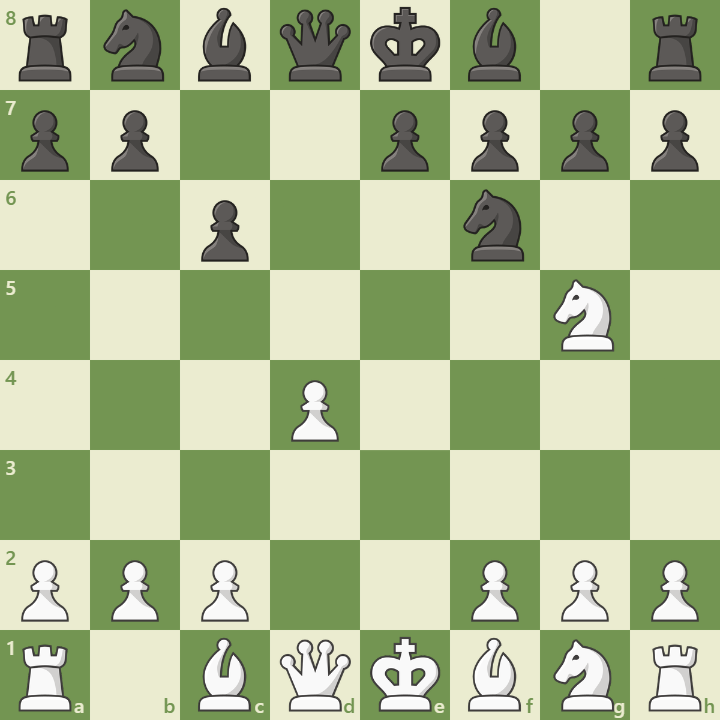
Nacisk na punkt f7.
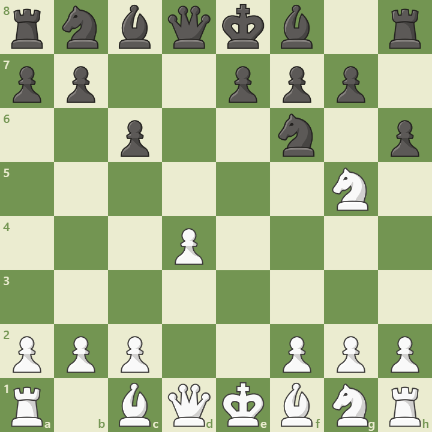
Odganianie skoczka pionem.
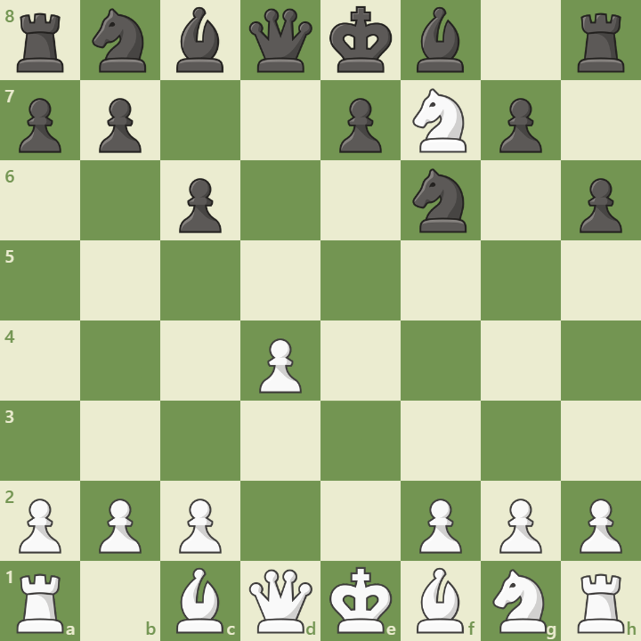
Poświęcenie skoczka na f7.
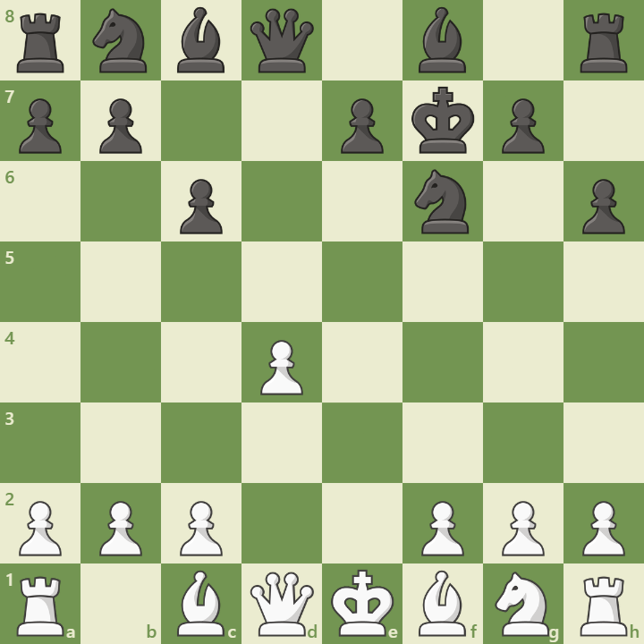
Król bije na f7 i traci roszadę.